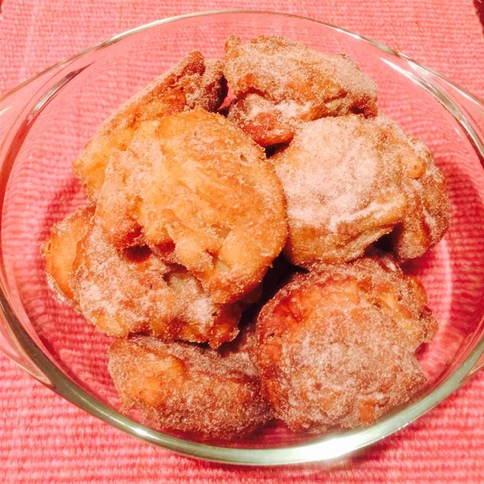

Apple Fritters

Description
My mom made these for us after school in the fall with the apples we'd pick and buy from a fruit farm. Warm, crisp, and sweet, a perfect fall treat.
Ingredients
- 1 quart vegetable oil for deep-frying
- 1 ½ cups all-purpose flour
- 1 tablespoon white sugar
- 2 teaspoons baking powder
- ½ teaspoon salt
- ⅔ cup milk
- 2 eggs, beaten
- 1 tablespoon vegetable oil
- 3 cups apples - peeled, cored and chopped
- 1 cup cinnamon sugar
- Heat the oil in a deep-fryer or electric skillet to 375 degrees F (190 degrees C).
- In a large bowl, stir together the flour, sugar, baking powder and salt. Pour in the milk, eggs and oil and stir until well blended. Mix in apples until they are evenly distributed.
- Drop spoonfuls of the batter into the hot oil and fry until golden on both sides, about 5 minutes depending on the size. Fry in smaller batches so they are not crowded. Remove from the hot oil using a slotted spoon and drain briefly on paper towels. Toss with cinnamon sugar while still warm.